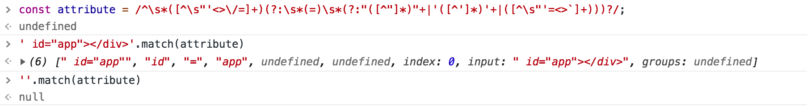
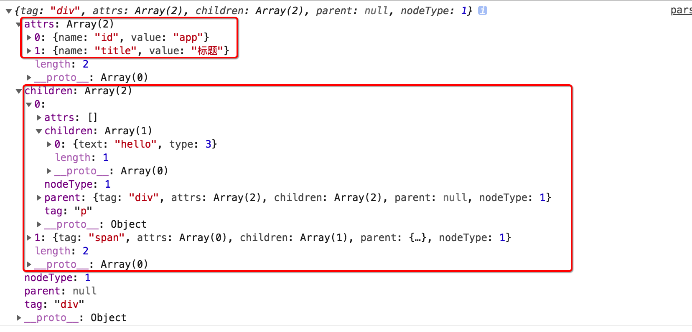

本文简单研究 html标签的编译过程，模板的编译是前端主流框架中的基础部分，搞清楚这块内容对于理解框架的工作原理、`virtual-DOM` 有诸多益处 ，因限于篇幅所以本文将仅仅探讨把 html 字符串模板处理成 AST 树对象结构的过程。
单标签 HTML模板的解析
因为 HTML 解析的过程相对麻烦和复杂，因此为了把这个过程讲清楚，我这里先从下面这段最简单的 HTML 标签开始入手。我们专注一个点，需要做的似乎就是封装一个解析函数来完成转换，把字符串模板(template)作为函数的输入，把Tree 结构对象作为函数的输出即可。
输入 字符串模板(template)
输出 Tree 结构对象
1
2
3
4
| {
tag: "div",
attrs:[{name:"id",value:"app"}],
}
|
观察上面的输入和输出，我们需要逐字的扫描HTML字符串模板，提取里面的标签名称作为最终对象的 Tag 属性值，提取里面的属性节点保存到 attrs 属性中，因为标签身上可能有多个属性节点，所以 attrs 使用对象数组结构。
在扫描<div id="app"></div>字符串的时候，我们需区分开始标签、属性节点、闭合标签等部分，又因为标签的类型可以有很多种(div、span等)，而属性节点的 key 和 value我们也无法限定和预估，因此在具体操作的时候似乎还需要用到 正则表达式来进行匹配，下面给出需要用到的正则表达式，并试着给出解析上述 HTML 模板字符串的 JavaScript 实现代码。
1
2
3
4
5
6
7
8
9
10
11
12
13
14
15
16
17
18
19
20
21
22
23
24
25
26
27
28
29
30
31
32
33
34
35
36
37
38
39
40
41
42
43
44
45
46
47
48
49
50
51
52
53
54
55
56
57
58
59
60
61
62
63
64
65
66
67
68
69
70
71
72
73
74
75
|
const nc_name = `[a-zA-Z_][\\-\\.0-9_a-zA-Z]*`;
const q_nameCapture = `((?:${nc_name}\\:)?${nc_name})`;
const startTagOpen = new RegExp(`^<${q_nameCapture}`);
const startTagClose = /^\s*(\/?)>/;
const att =/^\s*([^\s"'<>\/=]+)(?:\s*(=)\s*(?:"([^"]*)"+|'([^']*)'+|([^\s"'=<div>`]+)))?/
let template = `<div id="app"></div>`;
function parser_html(html) {
let textStart = html.indexOf('<');
if (textStart == 0) {
let start = html.match(startTagOpen);
if (start) {
const tagInfo = {
tag: start[1],
attrs: []
}
html = html.slice(start[0].length)
let attr, end;
while (!(end = html.match(startTagClose)) && (attr = html.match(att))) {
tagInfo.attrs.push({
name: attr[1],
value: attr[3] || attr[4] || attr[5]
})
html = html.slice(attr[0].length)
}
if (end) {
html = html.slice(end[0].length);
return tagInfo;
}
}
}
}
let tree = parser_html(template);
console.log(tree);
console.log(parser_html(`<span id="app" title="标题"></span>`));
|
在上面的代码中，多个地方都用到了字符串的match方法，该方法接收一个正则表达式作为参数，用于进行正则匹配，并返回匹配的结果。
这里以属性匹配为例，当我们对字符串' id="app"></div>'应用正则匹配att后，得到的结果是一个数组，而如果匹配不成功，那么得到的结果为 null。

复杂标签 HTML模板的解析
上文中处理的HTML 字符串模板比较简单，是单标签的(只有一个标签)，如果我们要处理的标签结构比较复杂，比如存在嵌套关系(既标签中又有一个或多个子标签，而子标签也有自己的属性节点、内容甚至是子节点)和文本内容等。
这里简单给出HTML 字符串模板编译的示例代码，基本上解决了标签嵌套的问题，能够最终得到一棵描述 标签结构的 “Tree”。
1
2
3
4
5
6
7
8
9
10
11
12
13
14
15
16
17
18
19
20
21
22
23
24
25
26
27
28
29
30
31
32
33
34
35
36
37
38
39
40
41
42
43
44
45
46
47
48
49
50
51
52
53
54
55
56
57
58
59
60
61
62
63
64
65
66
67
68
69
70
71
72
73
74
75
76
77
78
79
80
81
82
83
84
85
86
87
88
89
90
91
92
93
94
95
96
97
98
99
100
101
102
103
104
105
106
107
108
109
110
111
112
113
114
115
116
117
118
119
120
121
122
123
124
125
126
127
128
129
130
131
132
133
134
135
136
137
138
139
140
141
142
|
const nc_name = `[a-zA-Z_][\\-\\.0-9_a-zA-Z]*`;
const q_nameCapture = `((?:${nc_name}\\:)?${nc_name})`;
const startTagOpen = new RegExp(`^<${q_nameCapture}`);
const startTagClose = /^\s*(\/?)>/;
const endTag = new RegExp(`^<\\/${q_nameCapture}[^>]*>`);
const att = /^\s*([^\s"'<>\/=]+)(?:\s*(=)\s*(?:"([^"]*)"+|'([^']*)'+|([^\s"'=<div>`]+)))?/
const template = `<div id="app" title="标题"><p>hello</p><span>vito</span></div>`
let NODE_TYPE_TEXT = 3;
let NODE_TYPE_ELEMENT = 1;
let stack = [];
let root = null;
let currentParent;
function compiler(html) {
function advance(n) {
html = html.substring(n);
}
function parser_start_html() {
let start = html.match(startTagOpen);
if (start) {
const tagInfo = {
tag: start[1],
attrs: []
};
advance(start[0].length);
let attr, end;
while (!(end = html.match(startTagClose)) && (attr = html.match(att))) {
tagInfo.attrs.push({
name: attr[1],
value: attr[3] || attr[4] || attr[5]
});
advance(attr[0].length);
}
if (end) {
advance(end[0].length);
return tagInfo;
}
}
}
while (html) {
let textTag = html.indexOf('<');
if (textTag == 0) {
let startTagMatch = parser_start_html();
if (startTagMatch) {
start(startTagMatch.tag, startTagMatch.attrs);
continue;
}
let endTagMatch = html.match(endTag);
if (endTagMatch) {
advance(endTagMatch[0].length);
end(endTagMatch[1]);
continue;
}
}
let text;
if (textTag >= 0) {
text = html.substring(0, textTag);
}
if (text) {
advance(text.length);
chars(text);
}
}
return root;
}
function chars(text) {
text = text.replace(/\s/g, '');
if (text) {
currentParent.children.push({
text,
type: NODE_TYPE_TEXT
})
}
}
function start(tag, attrs) {
let element = createASTElement(tag, attrs);
if (!root) {
root = element;
}
currentParent = element;
stack.push(element);
}
function end(tagName) {
let element = stack.pop();
currentParent = stack[stack.length - 1];
if (currentParent) {
element.parent = currentParent;
currentParent.children.push(element);
}
}
function createASTElement(tag, attrs) {
return {
tag,
attrs,
children: [],
parent: null,
nodeType: NODE_TYPE_ELEMENT
}
}
console.log(compiler(template));
|
执行上述代码，我们可以得到下面的显示结果。
